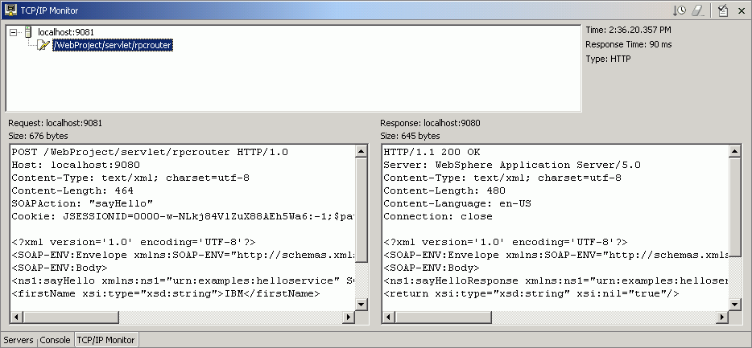

Once you have created your Web service and Web service client,
you can monitor the Web service's SOAP traffic using the TCP/IP Monitor.
Prerequisites:
- Generate a Web service
- Generate a Proxy and a sample application
When creating a Web service using the Web service or Web service
client wizards, you can select to set up and run the TCP/IP Monitor automatically.
Alternately, you can set up the TCP/IP Monitor manually by completing the
following steps:
- In the sample application, invoke the getEndPoint method. Record
this endpoint. The default endpoint for a Web service is: http://localhost:<port>/<web module
context root>/services/<port>
- Create a server to act as the TCP/IP Monitor:
- From the Window menu, select Preferences.
- In the Preferences window, expand Internet and then select TCP/IP
Monitor.
- Select the Show TCP/IP Monitor View when there is
activity check box.
- Under the TCP/IP Monitors lists, click Add.
A New Monitor dialog opens.
- Specify the following settings:
| Option |
Description |
|---|
| Local monitoring port |
Specify a unique
port number on your local machine. |
| Host name |
Specify the host name or IP address
of the machine where the server is running. |
| Port |
Specify the port number of the remote
server. |
| Type |
Specify whether the request type from
the Web browser are sent by HTTP or TCP/IP. If the HTTP option is selected
the requests from the Web browser are modified so that the HTTP header points
to the remote machine and separated if multiple HTTP requests are received
in the same connection. If the TCP/IP option is selected, all the requests
are sent byte for byte. |
- In order to route the Web service through the monitor, the endpoint
of the Web service client needs to be changed. The TCP/IP Monitor listens
on port 9081. In the Web browser window used in step 1, invoke the setEndPoint
method, and change the endpoint so that it directs to port 9081. For example,
the default would be: http://localhost:9081/web_module_context_root/servlet/rpcrouter Invoke
the getEndPoint method again to ensure that your change has been implemented.
- Select a Web service method in the Methods pane. Invoke this method.
- Change to the TCP/IP Monitor view by selecting the TCP/IP Monitor
tab in the Servers view. This will display request and response pairs that
are being routed through the TCP/IP Monitor. It will look similar to the following
picture:

- To ensure that your Web service SOAP traffic is WS-I compliant,
you can generate a log file by clicking the icon. In the dialog box that opens,
select a name for the log file and specify where you want it to be stored.
This log file will be validated for WS-I compliance. You can open
the log file in an XML editor to examine its contents.